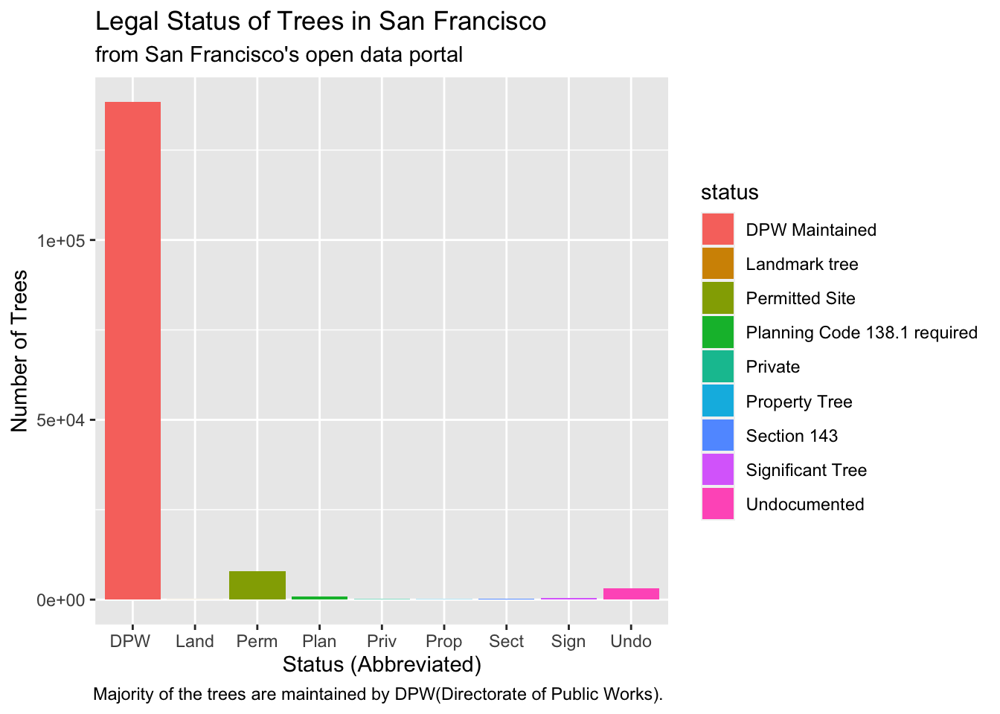
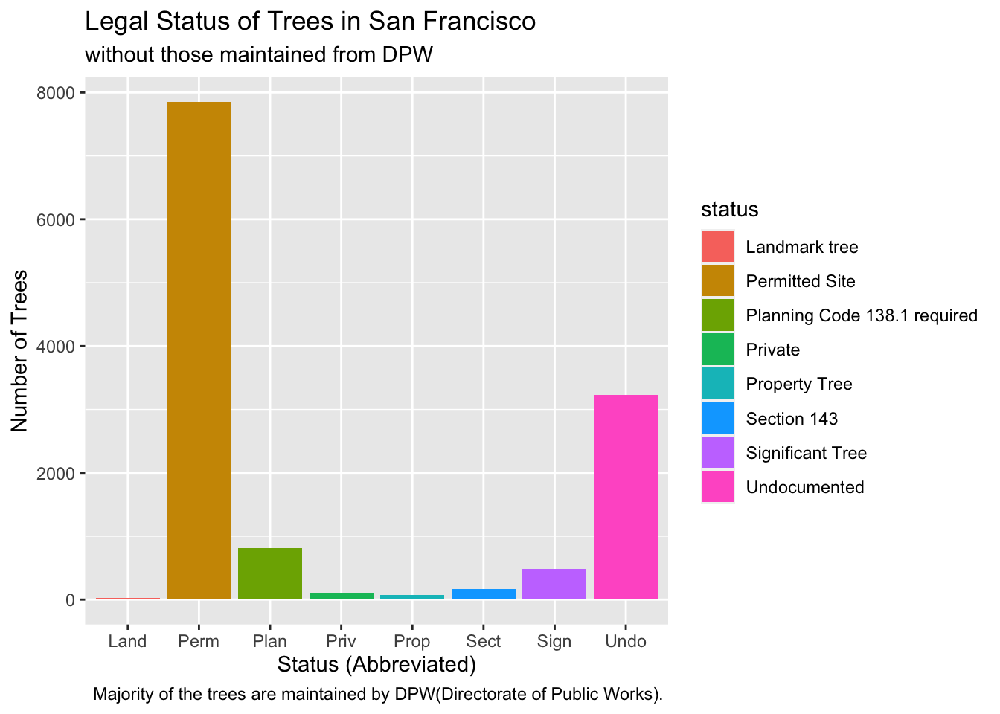
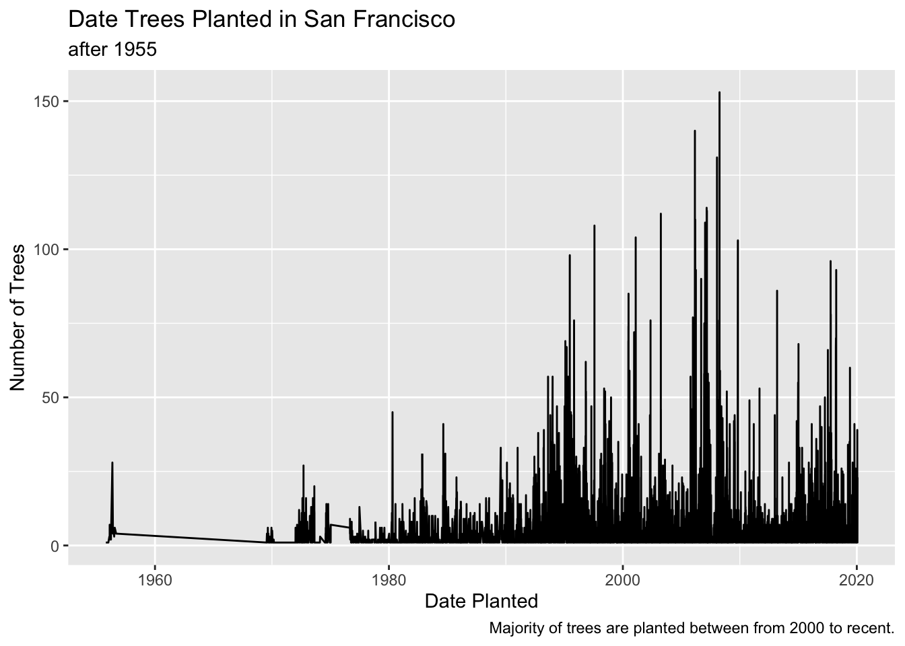
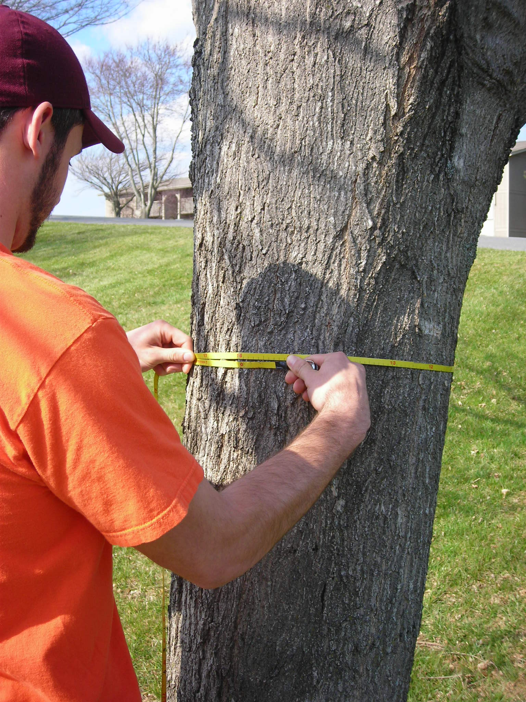
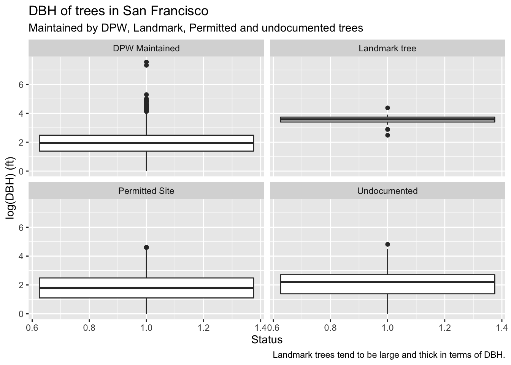

This page provides simple examples of data analysis using R and tidyverse with data from San Francisco’s open data portal and cleaned version from tidytuesday.
This SF tree dataset is composed of information of trees in San Francisco including its species, address, size, longitude, latitude, when it was planted, etc.
The intended audience for this data analysis is for park designers or botanists who are interested in overall trends of planting trees.
What types of status of trees are there, and how are they distributed?
library(readr)library(tidyverse)
Warning: package 'ggplot2' was built under R version 4.1.2
Warning: package 'tibble' was built under R version 4.1.2
library(stringr)trees <- readr::read_csv("https://raw.githubusercontent.com/rfordatascience/tidytuesday/master/data/2020/2020-01-28/sf_trees.csv") trees <- trees %>%select(-c("address","site_order","site_info","plot_size","tree_id")) %>%rename(status = legal_status) %>%filter(!is.na(dbh), !is.na(status)) %>%mutate(short_status =str_extract(status, "^.{4}"))
trees %>%ggplot(aes(x=short_status, fill=status)) +geom_bar() +xlab("Status (Abbreviated)") +ylab("Number of Trees") +labs(title ="Legal Status of Trees in San Francisco", subtitle ="from San Francisco's open data portal",caption ="Majority of the trees are maintained by DPW(Directorate of Public Works). ")

Since most trees are maintained by DPW, I wanted to check the distribution of trees excluding those from DPW.
trees %>%filter(short_status !="DPW ") %>%ggplot(aes(x=short_status, fill=status)) +geom_bar() +xlab("Status (Abbreviated)") +ylab("Number of Trees") +labs(title ="Legal Status of Trees in San Francisco", subtitle ="without those maintained from DPW",caption ="Majority of the trees are maintained by DPW(Directorate of Public Works). ")

Age of Trees
The question to answer
When were the trees nowadays in San Francisco planted?
trees %>%filter(!is.na(date)) %>%group_by(date) %>%summarise(total_count=n()) %>%ggplot(aes(x=date, y = total_count)) +geom_line() +xlab("Date Planted") +ylab("Number of Trees") +labs(title ="Date Trees Planted in San Francisco", subtitle ="after 1955",caption ="Majority of trees are planted between from 2000 to recent.")

From this plot, we can check when the trees are planted and the overall trends of its date planted. There is a huge gap between 1955 and 1970 which means that trees are not planted during that period.
Size and Diameter of Trees
The question to answer
How the size and diameter of trees differ from each status?
Are landmark trees are tend to be thicker or bigger?
Important
Size or Diameter of tree are often defined as DBH which is ‘Diameter at breast height’.
Tree sizes are measured at the adult’s breast height, which usually differs by countries and situations. In many countries, DBH is measured at approximately 1.3 m (4.3 ft) above ground. wikipedia:DBH

trees %>%filter(short_status %in%c("DPW ","Land","Perm","Undo"), dbh <=2000 , dbh >0) %>%ggplot(aes(x=1, y=log(dbh))) +geom_boxplot()+facet_wrap(~status) +xlab("Status") +ylab("log(DBH) (ft)") +labs(title ="DBH of trees in San Francisco", subtitle ="Maintained by DPW, Landmark, Permitted and undocumented trees",caption ="Landmark trees tend to be large and thick in terms of DBH.")

Landmark trees tend to be large and thick in terms of DBH. But there is no big DBH difference between those other three groups. In addition, we could observe that some of trees maintained by DPW tends to be bigger and thicker than from other two groups(Permitted, Undocumented).
There are three main questions I aim to answer from this data analysis. The first one is ‘What is the status of the trees and how are distributed?’. We could find that most of the trees are maintained by DPW, permitted sites. The next largest population of trees were undocumented whose legal status was unknown. By second analysis of trees regarding their age and date planted, we could visualize it’s an overall trend when they were planted. Lastly, we could check the distribution of the trees’ size defined as DBH, and we could find that the size of Landmark trees is significantly larger than other trees.